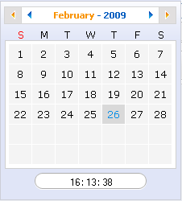
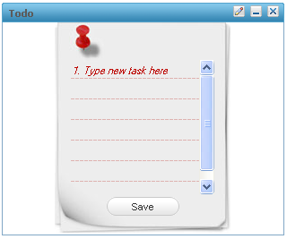

A gadget is a mini web application, embedded in a web page and running on an application server platform. These small applications help users perform various tasks.
GateIn 3.2 supports gadgets such as: Todo gadget, Calendar gadget, Calculator gadget, Weather Forecasts and and RSS Reader.
Default Gadgets:
- Calendar
The calendar gadget allows users to switch easily between daily, monthly and yearly view and, again, is customizable to match your portal's theme.
- ToDo
This application helps you organize your day and work group. It is designed to keep track of your tasks in a convenient and transparent way. Tasks can be highlighted with different colors.
- Calculator
This mini-application lets you perform most basic arithmetic operations and can be themed to match the rest of your portal.

- RSS Reader
An RSS reader, or aggregator, collates content from various, user-specified feed sources and displays them in one location. This content can include, but isn't limited to, news headlines, blog posts or email. The RSS Reader gadget displays this content in a single window on your Portal page.
- More Gadgets
Further gadgets can be obtained from the Google Gadget site. GateIn 3.2 is compatible with most of the gadgets available here.
Important
The following sections require more textual information.


After referencing the gadget successfully, then import it into the local repository.


GateIn 3.2 recommends using two virtual hosts for security. If the gadget is running on a different domain than the container (the website that 'contains' the app), it is unable to interfere with the portal by modifying code or cookies.
An example would hosting the portal from http://www.sample.com and the gadgets from http://www.samplemodules.com.
To do this, configure a parameter called gadgets.hostName. The value is the path/to/gadgetServer in GadgetRegisteryService:
<component>
<key>org.exoplatform.application.gadget.GadgetRegistryService</key>
<type>org.exoplatform.application.gadget.jcr.GadgetRegistryServiceImpl</type>
<init-params>
<value-param>
<name>gadgets.hostName</name>
<description>Gadget server url</description>
<value>http://localhost:8080/GateInGadgetServer/gadgets/</value>
</value-param>
</init-params>
</component>
It is also possible to have multiple rendering servers. This helps to balance the rendering load across multiple servers.
When deploying on the same server ensure the gadget initiates before anything that calls it (for example; the webapp GateInGadgets which uses org.exoplatform.application.gadget.GadgetRegister).
A file called key.txt has to be generated for every installation of GateIn 3.2 to be secure. This file contains a secret key used to encrypt the security token used for authenticating the user.
In Linux systems this file can be generated with:
dd if=/dev/random bs=32 count=1 | openssl base64 > /tmp/key.txt
These servers have to be on the same domain as the gadget server. You can configure the container in eXoGadgetServer:/WEB-INF/classes/containers/default/container.js.
"gadgets.content-rewrite" : {
"include-urls": ".*",
"exclude-urls": "",
"include-tags": ["link", "script", "embed", "img", "style"],
"expires": "86400",
"proxy-url": "http://localhost:8080/eXoGadgetServer/gadgets/proxy?url=",
"concat-url": "http://localhost:8080/eXoGadgetServer/gadgets/concat?"
},